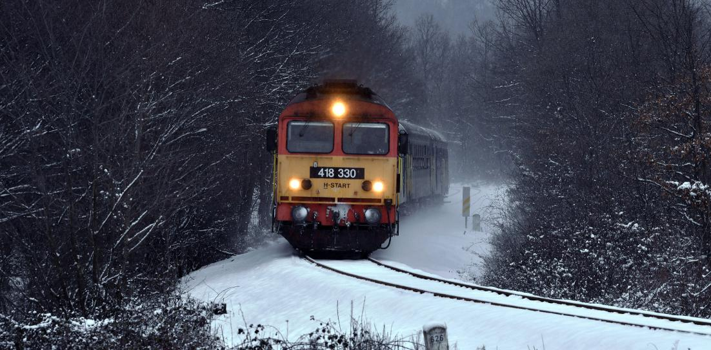
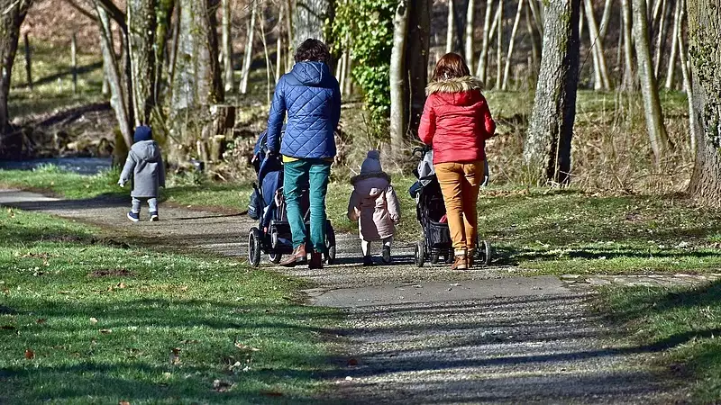

Esett egy kis hó, késnek a vonatok
A havazás, illetve váltóállítási gondok miatt a budapesti főpályaudvarokon és az elővárási vonalakon
főként a győri, a hatvani, a szolnoki, a kunszentmiklós-tassi és a veresegyházi vonalon 20-40
perccel nőhet a menetidő – olvasható a MÁV oldalán.

Forrás: www.168.hu
Tovább a teljes
cikkre
Hó, havas eső és eső is várható vasárnap
Vasárnap nagyrészt borult lesz az ég, északkeleten a nap első felében átmenetileg szűnik a csapadék,
írja a Kiderül. Máshol sok helyütt számítani lehet reggel az északi megyékben még inkább havazásra,
majd
ott is havas esőre, esőre, melyet késő délutántól, estétől, délkeleti, keleti megyék kivételével,
egyre
többfelé hó válthat fel ismét, ugyanakkor nyugat felől csökken a csapadék kiterjedése, illetve
mennyisége.
Forrás: www.24.hu
Tovább a teljes
cikkre
Duplázhatja a parlament a támogatást, ez 262 ezer gyereket érint
babakötvényben havonta bármekkora összeg félretehető, a kamata rendkívül kedvező: az előző évi
infláció plusz három százalék. Az állam ehhez nyújt még további maximum 6 ezer forint külön
támogatást minden évben. Amennyiben az Országgyűlés megszavazza, akkor 2022-től duplájára - 12 ezer
forintra - emelkedik a babakötvények utáni állami támogatás.

Forrás: www.napi.hu
Tovább
a teljes cikkre